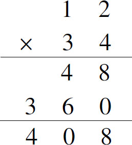
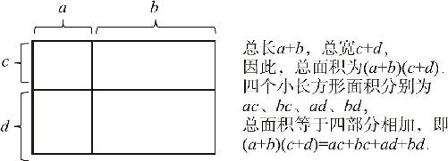
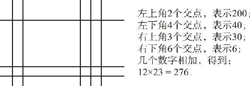

在前文中，我们通过几个例子，演示了二次方程的重要性．要想对二次方程求解，那还得先学点新东西．一次方程求解相对容易，但是二次方程就不那么简单了．可以毫不夸张地说：整个初中二年级的所有代数课程，全部都是给二次方程做准备的，包括我们刚刚学过的乘方、开方、分式计算，还包括我们接下来要学的多项式乘法和因式分解．
在讲代数架构的时候我就讲过，初中代数学的就是算式子，而且我们还把这个算式子，通过加减乘除分了四行三列的一个方阵，然后再用连线把加减乘除连起来，就得到了我们初中代数算式的所有内容，这里边有加式加加式，加式减加式，减式加减式，乘式乘乘式，乘式除乘式，等等，一共有64种组合．截至目前，我们已经学了一大半了，接下来我们要学习的多项式的乘法，就属于加减式之间相乘的法则．同时我们还要学如何把一个多项式，分解成几个算式的乘积，这个过程叫作因式分解．
提到两个多项式的乘法，倒是一点都不难，我们只要按照乘法分配律，把多项式里边的每一项逐个展开就可以了．这么说有点抽象，我们就举个例子．比如a ×（b ＋c ），在这个算式中，乘号前面的a 就属于一个单项式，但后面的b ＋c 就是一个多项式了，根据乘法分配律可以知道：a ×（b ＋c ）＝a b ＋a c ．
如果是（a ＋b ）（c ＋d ）呢？道理也是一样的，我们把a ＋b 看成一个整体，让这个算式分别跟后边的c 和d 相乘，然后加起来就对了，也就是（a ＋b ）c ＋（a ＋b ）d ，然后，我们再把c 和d 分别乘到括号里边，就得到了最终结果：（a ＋b ）（c ＋d ）＝a c ＋b c ＋a d ＋b d ．这个公式就是多项式乘法的运算法则．即使是再复杂的多项式乘法运算，也只不过是这个公式的变形而已．其实这种算法，我们在小学阶段也曾经接触过．比如两位数的乘法吧，我们是怎么做的呢？以12×34为例，我们在展开计算的时候，是不是先用2乘以4得出来8，然后再用12前面的1乘以4，得到一个4，因为1表示的是10，所以4表示的就是40，我们把这个4写在8的前头，表示40＋8＝48；然后接着处理第二行，先用2乘以3得6，因为3表示的是30，所以6表示的是60，再用1乘以3，得到3，它表示的是300，把3写在6的前头表示360，最后把这两行加起来，48＋360得到408．

回顾一下整个过程，我们是不是把这个12×34的过程，拆成了（10＋2）×（30＋4）呢？在具体计算的过程中，是不是又把这4个数字展开交错相乘再相加呢？没错，我们的计算过程就是：2×4＋10×4＋30×2＋30×10＝408．
如果再详细分析一下三位数、四位数的乘法，也就不难得出形如（a ＋b ＋c ）（d ＋e ＋f ）的计算结果了．很简单，都是把前边的每一项，分别和后边的每一项相乘，最后再把所有的结果都加起来，这就是多项式的乘法．关于多项式的乘法，还可以通过图形法来证明一下．比如（a ＋b ）（c ＋d ），我们可以在草稿纸上随便画一个长方形，然后把长随意分成a 、b 两段，再把宽随意分成c 、d 两段，再利用这个分割点画个十字，这样一来就把整个长方形分成了四个部分．长方形的总面积就有两种算法：一种是长乘宽，就是（a ＋b ）（c ＋d ），另一种呢，就是四块小长方形的面积之和．我们一看这四个小长方形的长宽就知道了，它们的面积分别是a c 、a d 、b c 、b d ，把它们一乘一加，结果得到的还是多项式的乘法公式．（如图12－1）

图12－1
提到这个图形证明方法，我又想到了国外的一种计算方法．大部分外国人都不会九九乘法表，他们怎么算乘法呢？据说印度人采用的是这种办法：他们算乘法的时候，会在地上画道道，比如12×23，先在地上水平画一条线，然后再隔一段往地下画两条水平线，这样就表示12；然后要乘以23了，先从左边竖直地画两根竖线，而后隔开一段在右边再画上3根线，最后数一数这个线的交点，加一起，然后就知道乘积是多少了．（如图12－2）这是为什么呢？

图12－2
其实，他们也是通过多项式乘法来解决问题的．如果把第一个两位数看成a ＋b ，第二个两位数看成c ＋d ，这个两位数的乘积不也是多项式的展开公式吗？当在这个纸上横竖画上a 条直线和b 条直线相交，就会产生a ×b 个交点，这样一来，把交点数一数、加一加，当然就知道结果了．
综上所述，多项式的乘法公式就是这么简单．不过仍有两点需要说明：第一，实际运算之前，应该先看一眼这个多项式乘法乘出来以后是多少项；然后核对一下总的项数，避免漏写一项．如何一眼看出来展开后有几项呢？我们只需要用前面的项数乘以后边的项数就知道了．第二，如果多项式内有减法，一定要把它看成是加上负数，同时负数之间相乘的时候，记得要变正号．这两点都是最容易犯的错误，我们得提前注意，避免出错．
两个多项式相乘，只要把前后两个多项式逐个展开相乘，然后再相加就可以了，如果用代数公式表达就是（a ＋b ）（c ＋d ）＝a c ＋a d ＋b c ＋b d ．为了加深印象，我们还给出了特例证明、代数证明和图形证明三种方式．那么，在多项式的乘法中，还有哪些秘密呢？